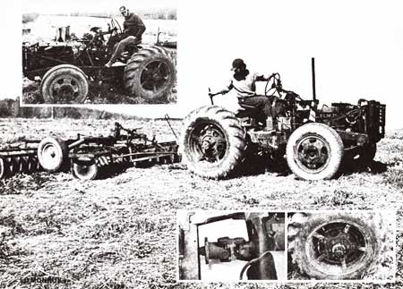

"I always wanted a tractor but I couldn't afford one," says 20-year-old Bill Whitaker of Garrattsville, New York. "So I built my own."
Built his own he did! And while it's true that Whitaker's creation may not be exactly the most stylish machine you've ever seen . . . it only cost him $200 out of pocket to construct, it handles well, it delivers 25 to 30 miles per gallon out on the road (where it's been clocked doing better than 80 miles per hour!), and-as Bill has already proved at Morris, New York's Otsego County Fair-it'll outpull factory-manufactured tractors in its weight class.
Whitaker began the construction of his machine by sliding the back end of a Model T truck frame into the front of a 1950 Dodge truck frame (the two cutoff sections-which overlap about two feet-were then bolted and welded together).
The wheelbase of the new chassis was kept as short as possible so the finished tractor would have a very tight turning radius. Furthermore, by starting with the front half of the Dodge frame the way he did, Bill was able to use its front axle, accompanying wheels, and steering gear "as is" merely by tacking on a sectional steering shaft outfitted with universal joints taken from a Gale "chopper".
A husky, two-speed rear axle from a GMC truck is rigidly attached to the rear of the tractor's chassis, and 28" tractor tire wheels have been welded to the truck rims mounted on the axle.
The engine and radiator on the Whitaker machine came from a 1964 Chevrolet "292" pickup that Bill bought for $20. And the six-cylinder powerplant is connected to that burly GMC rear axle through two four-speed truck transmissions (it took two to step the gearing down enough for the pulling contests that the tractor has won).
The first transmission-taken from a 1958 Chevrolet truck-is attached directly to the 292 engine's bell housing and the second-scavenged from an old Dodge-is mounted on a removable crossmember that is bolted to brackets welded to the tractor's chassis.
Power is transferred from the first gearbox to the second by two universal joints which have been welded together. One end of the combination mates with the splines on the Chevrolet transmission's tail shaft and the other is welded to a round piece of 1/4" steel plate which, in turn, is welded to the splined center section of a Dodge clutch disc. (Yet another universal-a single one-connects the Dodge transmission's tail shaft to the GMC rear axle.)
Whitaker's machine boasts separate brakes on its rear wheels ( just like a real tractor!) which are handy when Bill wants to make an extremely short turn or balance off the traction of one wheel against another during a heavy pull. Two Chevrolet master cylinders-actuated by suspended pedals-provide the braking pressure.
Although the bare machine tips the scales at 4,000 pounds, Bill quickly discovered that that wasn't enough weight to keep its wheels from spinning once the of Chevy 292 was really snortin'. So he added 900 pounds of weights and now reports that his tractor will "go almost anywhere".
Problems? There have been a few . . . but nothing major. Whitaker's tractor, for instance, has rather poor acceleration when both transmissions are in high . . . and the engine used to run so slowly at such times that it tended to overheat. Bill solved the second inconvenience by taking off the Chevy engine's original fan and putting on a seven-bladed Chrysler unit in its place. And just how often do you want to drive a tractor 60 miles an hour anyway? (When doing field work, Whitaker's homemade brute is usually run with its front gear box in "second" and its rear transmission in "third".)
Winning pulling contests, drawing wagons, skidding logs, raking hay, pushing a snowplow: You name it and Bill Whitaker's do-it-yourself tractor does it. And the machine only cost $200 to build. And I'm wondering if that gives you any ideas?
|
 |
|
|